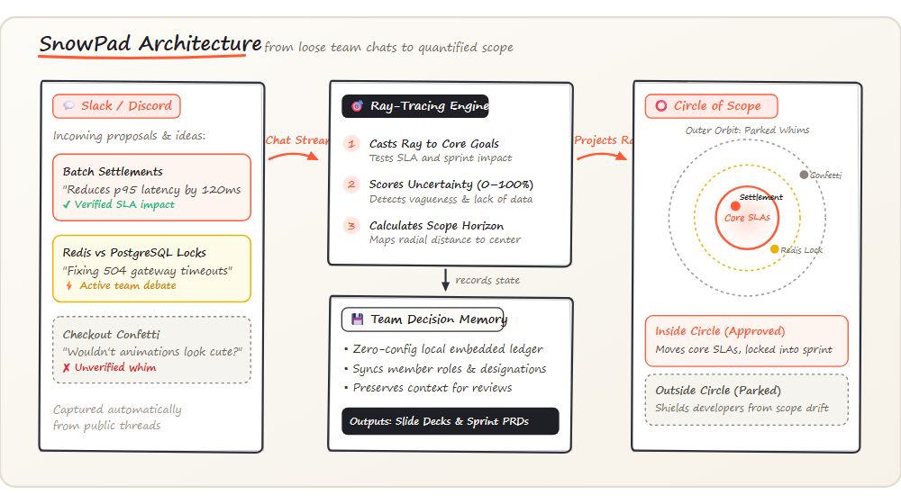

Interactive Deliverable Suite
Live web artifacts generated autonomously from team chat
Scope Radar HUD
Radial horizon canvas mapping all discussed features by uncertainty (0–100%) and radial scope distance. Blips within the green core circle move directly into sprint commits.
Jira Scope Board
Triaged kanban columns sorting noisy Slack and Switch chatter into Confirmed Sprint Deliverables, Active Technical Debates, and Quarantined Whims.
Team Hierarchy & Slides
Interactive team hierarchy linking engineering roles, PR commit trails, and evidence-backed quarterly review presentations rendered in Reveal.js.
Engineering Spotify Wrapped
Interactive, mobile-optimized 6-slide story reviewing the engineering quarter: total whims quarantined, latency shaved, top scope guardians, and top debate champions.
Quarterly Performance Slide Decks
Standalone Reveal.js executive presentations ready to present
4-Layer System Architecture
Autonomous pipeline from live chat to verified scope deliverables
